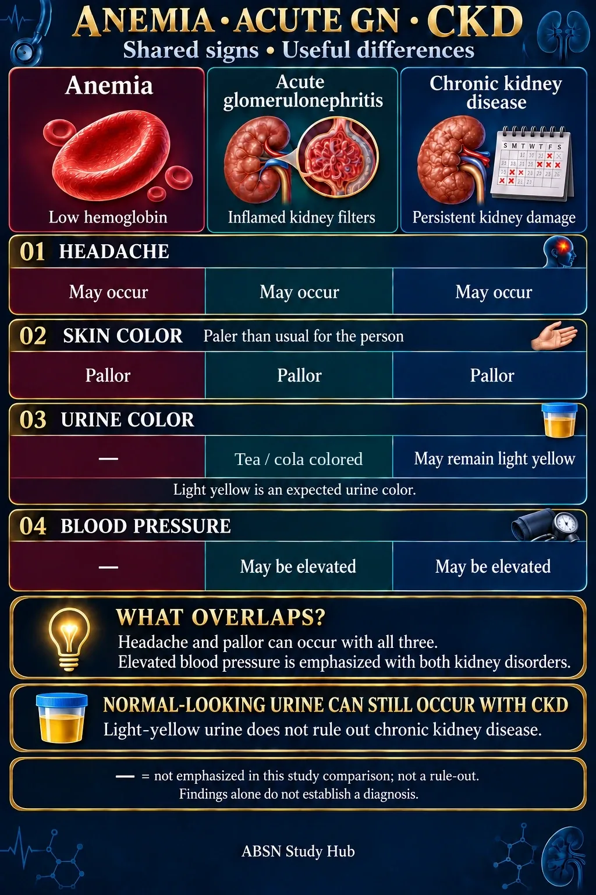

01 Headache
- Anemia
- May occur.
- Acute GN
- May occur.
- CKD
- May occur.
Headache is a shared finding, so it does not distinguish these conditions by itself.
Anemia · Acute glomerulonephritis · Chronic kidney disease
Compare headache, skin color, urine color and blood pressure. Start with the picture or jump to one finding below.

Light yellow is an expected urine color. Its appearance alone does not rule out chronic kidney disease.
Headache is a shared finding, so it does not distinguish these conditions by itself.
Pallor means paler than usual for the person. Compare with their usual skin appearance.
Acute GN leaks blood, so the urine looks tea- or cola-colored — your NUR 235 Module 13 page (“Nephrotic leaks protein. Nephritic leaks blood.”). Light yellow is an expected urine color, and normal-looking urine does not rule out chronic kidney disease.
Elevated blood pressure is emphasized with both kidney disorders in this comparison.
— means not emphasized in this study comparison. It does not mean the finding is impossible. The graphic focuses on the associations in your supplied study material; it is not a complete symptom list. Findings alone do not establish a diagnosis.
Based on the study material you supplied. GN = glomerulonephritis; CKD = chronic kidney disease; BP = blood pressure.
Anemia: low hemoglobin. Acute GN: inflammation of the kidney’s filtering units. CKD: persistent kidney damage or reduced function.
Prepared October 8, 2026. The source associations are preserved and phrased as possible findings rather than universal rules.